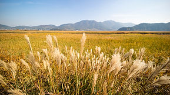
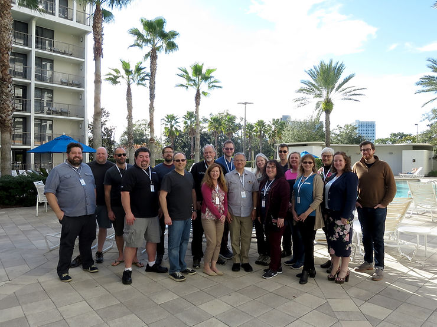
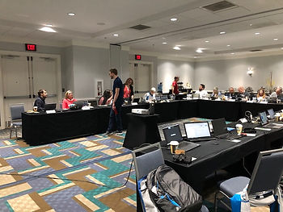
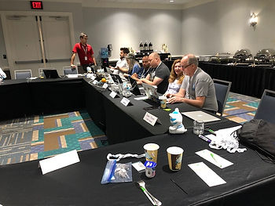
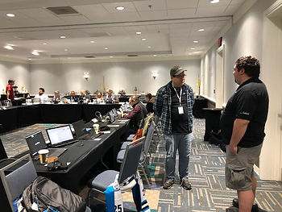
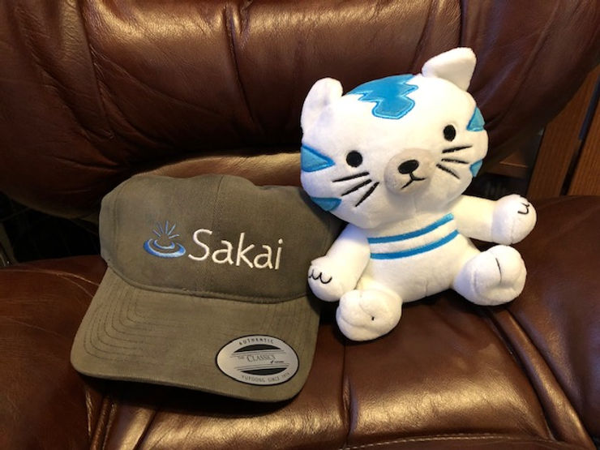

Community energy moves Sakai forward!
Feb 14, 2019
2 min read
While most of the North braced for record-breaking frigid temperatures, a small but mighty group of Sakaigers traveled South to meet up at Disney Springs in Orlando, FL for our annual Sakai Camp unconference retreat, January 27-30, 2019. Unfortunately, not everyone was there for the group photo below. (Note to self for next year… take group photo on day 1!)

As always, we have loads of fun when we come together as a group. If you would like to learn more about our networking and team-building shenanigans (or if you’d like to reminisce about the good times) check out our other Sakai Campfire Stories: WHOO Attended Camp This Year?, Location, Location, Location, and Dining and Other Adventures.
Sakai Camp is an unconference, so attendees decide on the agenda when we get there. Things tend to be somewhat fluid, and we always end up moving topics around, but it never ceases to amaze me how much we actually cover and how well things seem to fall into place.
Here’s a day by day list of our camp discussion topics. If you are interested, you can review our detailed notes. You can also watch our recent Teaching and Learning call recording on YouTube where some of our camp attendees talked about key takeaways from the meeting.
Monday

New Technology Awareness
- Reusable Web Components
- CKEditor 5
- Sakai Developer Bootcamp
Marketing and Messaging Discussions
- New sakailms.org website
- “The Case for Sakai”
- Marketing calendar
- Rogue Marketing - Sakai Race Car
Guiding Principles and the Sakai Manifesto
- Annual review and reflection
- Developing a Sakai Community set of Guiding Principles
Sakai 19 Release Schedule
Sakai 3 Year Roadmap
Tuesday

SCORM integrations and Learning Modules
Flexibility vs Usability - finding the sweet spot between feature richness and ease of use
Cloud file storage integrations (Google, O365, Box)
- Focus on Sakai UI
- SWITCH project
- Duke’s style inventory and proposed changes
- Implementing a Sakai UX/UI Pattern Library
Updates from NYU
- Social Features - Commons enhancements
- Other work in progress - Conversation tool proposal, Resources work
Sakai Centralized Grading Service
Straw Man for Sakai 2020
PMC Business
Wednesday

Open Apereo Proposals
Sakai Manifesto Review
UVA work on ElasticSearch
Nightly servers
Automated Testing
And with that, Sakai Camp 2019 came to a close. Like other camps before, it was an intense and productive two and a half days of strategic planning, updates and demonstrations, and deep conversations both technical and pedagogical. But also, it was a chance for our community members to get to know each other, socialize, and have fun. We all spend so much time working together in a virtual, distributed environment, that opportunities to interact in person are both rare and extremely valuable.
Oh, and speaking of valuable… check out the cool Sakai SWAG for our attendees! I think I speak for everyone when I say that we were all very happy campers.
